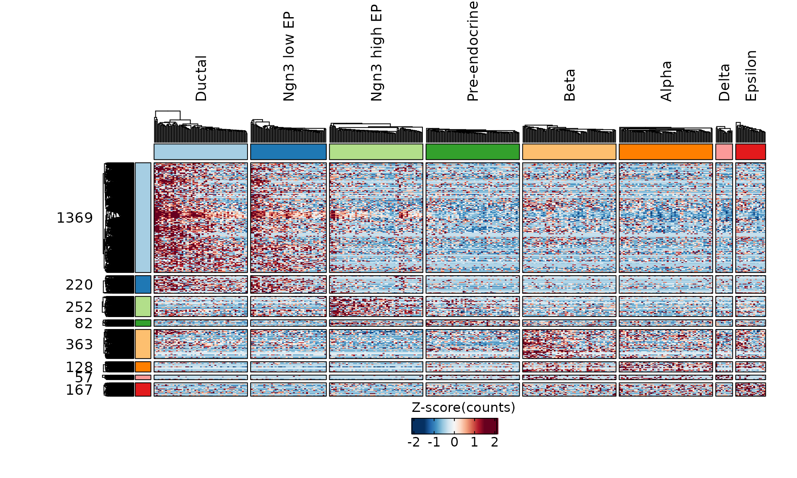
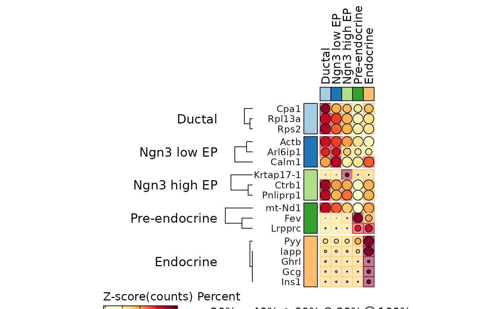
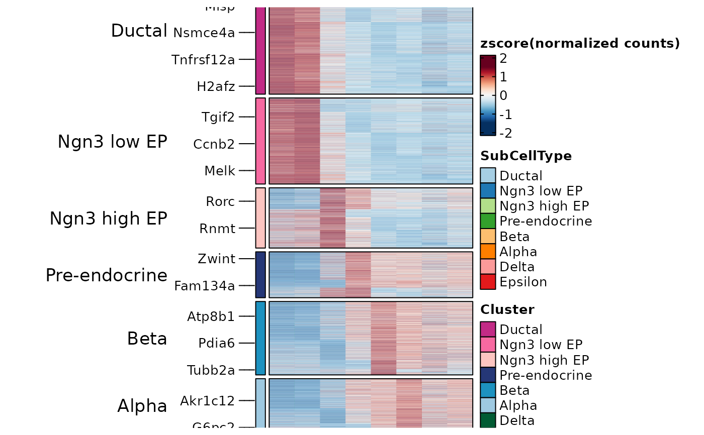
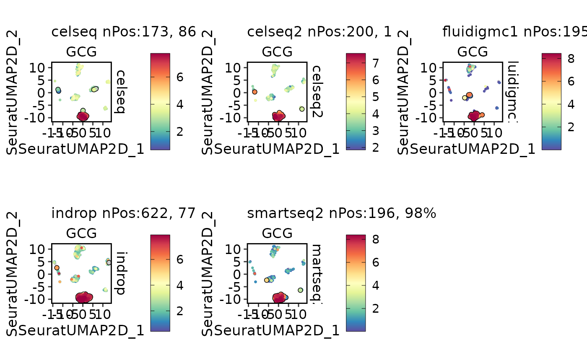
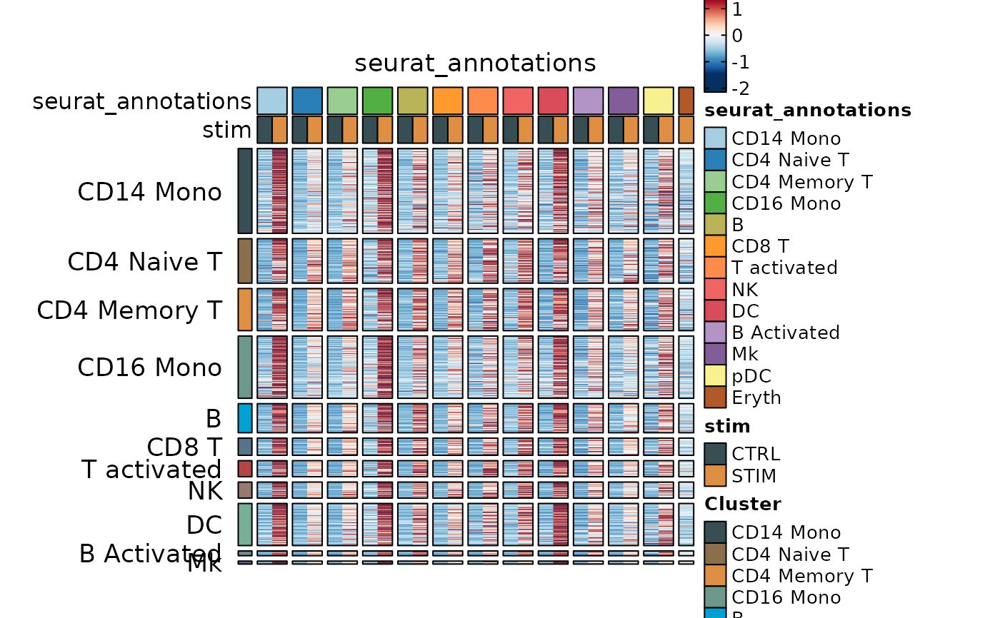
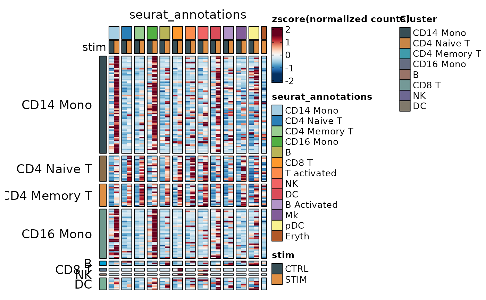
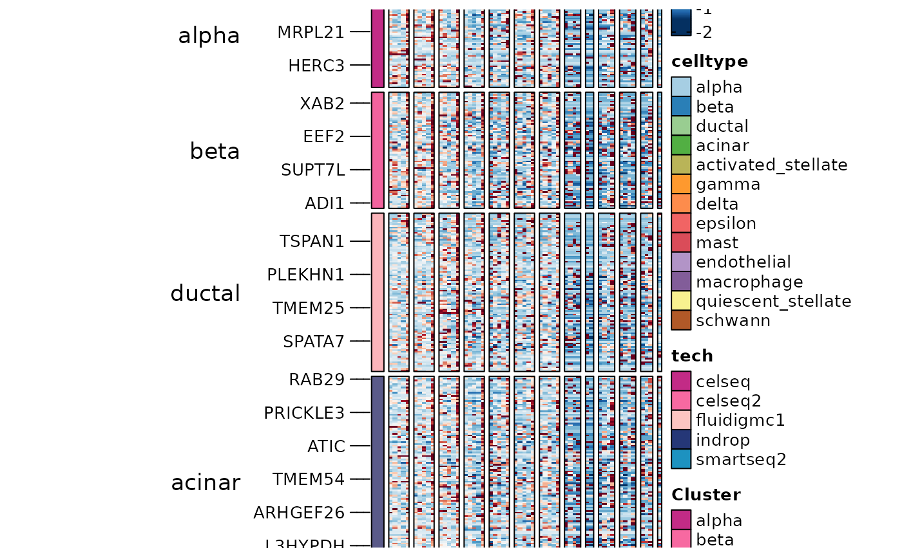
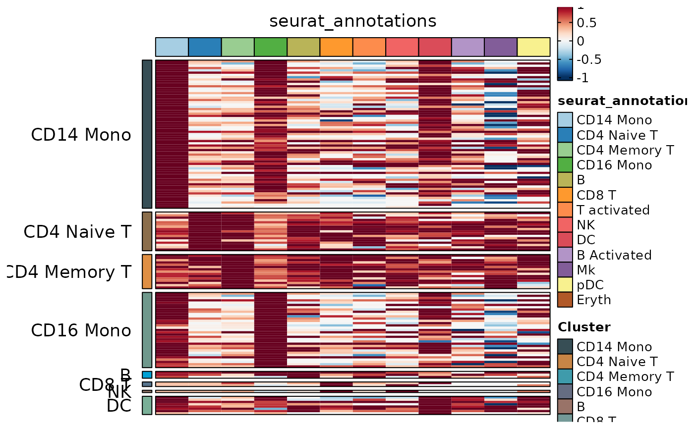

This function utilizes the Seurat package to perform a differential expression (DE) test on gene expression data. Users have the flexibility to specify custom cell groups, marker types, and various options for DE analysis.
Usage
RunDEtest(
srt,
group_by = NULL,
group1 = NULL,
group2 = NULL,
cells1 = NULL,
cells2 = NULL,
features = NULL,
markers_type = c("all", "paired", "conserved", "disturbed"),
grouping.var = NULL,
meta.method = c("maximump", "minimump", "wilkinsonp", "meanp", "sump", "votep"),
test.use = "wilcox",
only.pos = TRUE,
fc.threshold = 1.5,
base = 2,
pseudocount.use = 1,
mean.fxn = NULL,
min.pct = 0.1,
min.diff.pct = -Inf,
max.cells.per.ident = Inf,
latent.vars = NULL,
min.cells.feature = 3,
min.cells.group = 3,
norm.method = "LogNormalize",
p.adjust.method = "bonferroni",
slot = "data",
assay = NULL,
BPPARAM = BiocParallel::bpparam(),
seed = 11,
verbose = TRUE,
...
)Arguments
- srt
A Seurat object.
- group_by
A grouping variable in the dataset to define the groups or conditions for the differential test. If not provided, the function uses the "active.ident" variable in the Seurat object.
- group1
A vector of cell IDs or a character vector specifying the cells that belong to the first group. If both group_by and group1 are provided, group1 takes precedence.
- group2
A vector of cell IDs or a character vector specifying the cells that belong to the second group. This parameter is only used when group_by or group1 is provided.
- cells1
A vector of cell IDs specifying the cells that belong to group1. If provided, group1 is ignored.
- cells2
A vector of cell IDs specifying the cells that belong to group2. This parameter is only used when cells1 is provided.
- features
A vector of gene names specifying the features to consider for the differential test. If not provided, all features in the dataset are considered.
- markers_type
A character value specifying the type of markers to find. Possible values are "all", "paired", "conserved", and "disturbed".
- grouping.var
A character value specifying the grouping variable for finding conserved or disturbed markers. This parameter is only used when markers_type is "conserved" or "disturbed".
- meta.method
A character value specifying the method to use for combining p-values in the conserved markers test. Possible values are "maximump", "minimump", "wilkinsonp", "meanp", "sump", and "votep".
- test.use
Denotes which test to use. Available options are:
"wilcox" : Identifies differentially expressed genes between two groups of cells using a Wilcoxon Rank Sum test (default)
"bimod" : Likelihood-ratio test for single cell gene expression, (McDavid et al., Bioinformatics, 2013)
"roc" : Identifies 'markers' of gene expression using ROC analysis. For each gene, evaluates (using AUC) a classifier built on that gene alone, to classify between two groups of cells. An AUC value of 1 means that expression values for this gene alone can perfectly classify the two groupings (i.e. Each of the cells in cells.1 exhibit a higher level than each of the cells in cells.2). An AUC value of 0 also means there is perfect classification, but in the other direction. A value of 0.5 implies that the gene has no predictive power to classify the two groups. Returns a 'predictive power' (abs(AUC-0.5) * 2) ranked matrix of putative differentially expressed genes.
"t" : Identify differentially expressed genes between two groups of cells using the Student's t-test.
"negbinom" : Identifies differentially expressed genes between two groups of cells using a negative binomial generalized linear model. Use only for UMI-based datasets
"poisson" : Identifies differentially expressed genes between two groups of cells using a poisson generalized linear model. Use only for UMI-based datasets
"LR" : Uses a logistic regression framework to determine differentially expressed genes. Constructs a logistic regression model predicting group membership based on each feature individually and compares this to a null model with a likelihood ratio test.
"MAST" : Identifies differentially expressed genes between two groups of cells using a hurdle model tailored to scRNA-seq data. Utilizes the MAST package to run the DE testing.
"DESeq2" : Identifies differentially expressed genes between two groups of cells based on a model using DESeq2 which uses a negative binomial distribution (Love et al, Genome Biology, 2014).This test does not support pre-filtering of genes based on average difference (or percent detection rate) between cell groups. However, genes may be pre-filtered based on their minimum detection rate (min.pct) across both cell groups. To use this method, please install DESeq2, using the instructions at https://bioconductor.org/packages/release/bioc/html/DESeq2.html
- only.pos
Only return positive markers (FALSE by default)
- fc.threshold
A numeric value used to filter genes for testing based on their average fold change between/among the two groups. By default, it is set to 1.5
- base
The base with respect to which logarithms are computed.
- pseudocount.use
Pseudocount to add to averaged expression values when calculating logFC. 1 by default.
- mean.fxn
Function to use for fold change or average difference calculation. If NULL, the appropriate function will be chose according to the slot used
- min.pct
only test genes that are detected in a minimum fraction of min.pct cells in either of the two populations. Meant to speed up the function by not testing genes that are very infrequently expressed. Default is 0.1
- min.diff.pct
only test genes that show a minimum difference in the fraction of detection between the two groups. Set to -Inf by default
- max.cells.per.ident
Down sample each identity class to a max number. Default is no downsampling. Not activated by default (set to Inf)
- latent.vars
Variables to test, used only when
test.useis one of 'LR', 'negbinom', 'poisson', or 'MAST'- min.cells.feature
Minimum number of cells expressing the feature in at least one of the two groups, currently only used for poisson and negative binomial tests
- min.cells.group
Minimum number of cells in one of the groups
- norm.method
Normalization method for fold change calculation when slot is 'data'. Default is "LogNormalize".
- p.adjust.method
A character value specifying the method to use for adjusting p-values. Default is "bonferroni".
- slot
Slot to pull data from; note that if
test.useis "negbinom", "poisson", or "DESeq2",slotwill be set to "counts"- assay
Assay to use in differential expression testing
- BPPARAM
A BiocParallelParam object specifying the parallelization parameters for the differential test. Default is BiocParallel::bpparam().
- seed
An integer value specifying the seed. Default is 11.
- verbose
A logical value indicating whether to display progress messages during the differential test. Default is TRUE.
- ...
Additional arguments to pass to the
FindMarkersfunction.
Examples
library(dplyr)
data("pancreas_sub")
pancreas_sub <- RunDEtest(pancreas_sub, group_by = "SubCellType")
#> Warning: Data in the 'data' slot is raw counts. Perform NormalizeData(LogNormalize) on the data.
#> [2023-10-26 14:23:30.817226] Start DEtest
#> Workers: 1
#> Find all markers(wilcox) among 8 groups...
#>
|
| | 0%
|
|==============================================================================================================| 100%
#>
#> [2023-10-26 14:23:35.73216] DEtest done
#> Elapsed time:4.91 secs
AllMarkers <- filter(pancreas_sub@tools$DEtest_SubCellType$AllMarkers_wilcox, p_val_adj < 0.05 & avg_log2FC > 1)
table(AllMarkers$group1)
#>
#> Ductal Ngn3 low EP Ngn3 high EP Pre-endocrine Beta Alpha Delta Epsilon
#> 75 29 69 39 61 50 37 44
ht1 <- GroupHeatmap(pancreas_sub, features = AllMarkers$gene, feature_split = AllMarkers$group1, group.by = "SubCellType")
#> 'magick' package is suggested to install to give better rasterization.
#>
#> Set `ht_opt$message = FALSE` to turn off this message.
ht1$plot

TopMarkers <- AllMarkers %>%
group_by(gene) %>%
top_n(1, avg_log2FC) %>%
group_by(group1) %>%
top_n(3, avg_log2FC)
ht2 <- GroupHeatmap(pancreas_sub, features = TopMarkers$gene, feature_split = TopMarkers$group1, group.by = "SubCellType", show_row_names = TRUE)
#> 'magick' package is suggested to install to give better rasterization.
#>
#> Set `ht_opt$message = FALSE` to turn off this message.
ht2$plot

pancreas_sub <- RunDEtest(pancreas_sub, group_by = "SubCellType", markers_type = "paired")
#> [2023-10-26 14:23:38.015016] Start DEtest
#> Workers: 1
#> Find paired markers(wilcox) among 8 groups...
#>
|
| | 0%
|
|==============================================================================================================| 100%
#>
#> [2023-10-26 14:23:58.335474] DEtest done
#> Elapsed time:20.32 secs
PairedMarkers <- filter(pancreas_sub@tools$DEtest_SubCellType$PairedMarkers_wilcox, p_val_adj < 0.05 & avg_log2FC > 1)
table(PairedMarkers$group1)
#>
#> Ductal Ngn3 low EP Ngn3 high EP Pre-endocrine Beta Alpha Delta Epsilon
#> 893 787 680 571 645 575 426 575
ht3 <- GroupHeatmap(pancreas_sub, features = PairedMarkers$gene, feature_split = PairedMarkers$group1, group.by = "SubCellType")
#> 'magick' package is suggested to install to give better rasterization.
#>
#> Set `ht_opt$message = FALSE` to turn off this message.
ht3$plot

data("panc8_sub")
panc8_sub <- Integration_SCP(panc8_sub, batch = "tech", integration_method = "Seurat")
#> [2023-10-26 14:24:06.873903] Start Seurat_integrate
#> [2023-10-26 14:24:06.885801] Spliting srtMerge into srtList by column tech... ...
#> [2023-10-26 14:24:07.333775] Checking srtList... ...
#> Data 1/5 of the srtList is raw_normalized_counts. Perform NormalizeData(LogNormalize) on the data ...
#> Perform FindVariableFeatures on the data 1/5 of the srtList...
#> Data 2/5 of the srtList is raw_normalized_counts. Perform NormalizeData(LogNormalize) on the data ...
#> Perform FindVariableFeatures on the data 2/5 of the srtList...
#> Data 3/5 of the srtList is raw_normalized_counts. Perform NormalizeData(LogNormalize) on the data ...
#> Perform FindVariableFeatures on the data 3/5 of the srtList...
#> Data 4/5 of the srtList is raw_counts. Perform NormalizeData(LogNormalize) on the data ...
#> Perform FindVariableFeatures on the data 4/5 of the srtList...
#> Data 5/5 of the srtList is raw_counts. Perform NormalizeData(LogNormalize) on the data ...
#> Perform FindVariableFeatures on the data 5/5 of the srtList...
#> Use the separate HVF from srtList...
#> Number of available HVF: 2000
#> [2023-10-26 14:24:10.068593] Finished checking.
#> [2023-10-26 14:24:10.389293] Perform FindIntegrationAnchors on the data...
#> [2023-10-26 14:24:31.32992] Perform integration(Seurat) on the data...
#> [2023-10-26 14:24:38.456233] Perform ScaleData on the data...
#> [2023-10-26 14:24:38.70372] Perform linear dimension reduction (pca) on the data...
#> [2023-10-26 14:24:39.808603] Perform FindClusters (louvain) on the data...
#> [2023-10-26 14:24:39.970694] Reorder clusters...
#> [2023-10-26 14:24:40.1562] Perform nonlinear dimension reduction (umap) on the data...
#> Non-linear dimensionality reduction(umap) using Reduction(Seuratpca, dims:1-12) as input
#> Non-linear dimensionality reduction(umap) using Reduction(Seuratpca, dims:1-12) as input
#> [2023-10-26 14:24:50.566344] Seurat_integrate done
#> Elapsed time: 43.69 secs
CellDimPlot(panc8_sub, group.by = c("celltype", "tech"))

panc8_sub <- RunDEtest(panc8_sub, group_by = "celltype", grouping.var = "tech", markers_type = "conserved")
#> [2023-10-26 14:24:51.334954] Start DEtest
#> Workers: 1
#> Find conserved markers(wilcox) among 13 groups...
#>
|
| | 0%
#> Warning: celseq has fewer than 3 cells. Skipping celseq
#> Warning: celseq has fewer than 3 cells. Skipping celseq
#> Warning: celseq2 has fewer than 3 cells. Skipping celseq2
#> Warning: fluidigmc1 has fewer than 3 cells. Skipping fluidigmc1
#> Warning: smartseq2 has fewer than 3 cells. Skipping smartseq2
#> Warning: indrop has fewer than 3 cells. Skipping indrop
#> Warning: No group was tested
#> Warning: celseq has fewer than 3 cells. Skipping celseq
#> Warning: celseq2 has fewer than 3 cells. Skipping celseq2
#> Warning: smartseq2 has fewer than 3 cells. Skipping smartseq2
#> Warning: celseq has fewer than 3 cells. Skipping celseq
#> Warning: fluidigmc1 has fewer than 3 cells. Skipping fluidigmc1
#> Warning: smartseq2 has fewer than 3 cells. Skipping smartseq2
#> Warning: celseq has fewer than 3 cells. Skipping celseq
#> Warning: celseq2 has fewer than 3 cells. Skipping celseq2
#> Warning: fluidigmc1 has fewer than 3 cells. Skipping fluidigmc1
#> Warning: smartseq2 has fewer than 3 cells. Skipping smartseq2
#> Warning: Only a single group was tested
#> Warning: celseq has fewer than 3 cells. Skipping celseq
#> Warning: celseq2 has fewer than 3 cells. Skipping celseq2
#> Warning: smartseq2 has fewer than 3 cells. Skipping smartseq2
#> Warning: indrop has fewer than 3 cells. Skipping indrop
#> Warning: Only a single group was tested
#>
|
|==============================================================================================================| 100%
#>
#> [2023-10-26 14:25:21.417648] DEtest done
#> Elapsed time:30.08 secs
ConservedMarkers1 <- filter(panc8_sub@tools$DEtest_celltype$ConservedMarkers_wilcox, p_val_adj < 0.05 & avg_log2FC > 1)
table(ConservedMarkers1$group1)
#>
#> alpha beta ductal acinar activated_stellate gamma
#> 34 47 145 89 171 16
#> delta epsilon mast endothelial macrophage quiescent_stellate
#> 8 0 0 128 152 105
#> schwann
#> 16
ht4 <- GroupHeatmap(panc8_sub,
slot = "data",
features = ConservedMarkers1$gene, feature_split = ConservedMarkers1$group1,
group.by = "tech", split.by = "celltype", within_groups = TRUE
)
#> 'magick' package is suggested to install to give better rasterization.
#>
#> Set `ht_opt$message = FALSE` to turn off this message.
ht4$plot

panc8_sub <- RunDEtest(panc8_sub, group_by = "tech", grouping.var = "celltype", markers_type = "conserved")
#> [2023-10-26 14:25:28.742674] Start DEtest
#> Workers: 1
#> Find conserved markers(wilcox) among 5 groups...
#>
|
| | 0%
#> Warning: mast has fewer than 3 cells. Skipping mast
#> Warning: schwann has fewer than 3 cells. Skipping schwann
#> Warning: epsilon has fewer than 3 cells. Skipping epsilon
#> Warning: macrophage has fewer than 3 cells. Skipping macrophage
#> Warning: quiescent_stellate has fewer than 3 cells. Skipping quiescent_stellate
#> Warning: endothelial has fewer than 3 cells. Skipping endothelial
#> Warning: activated_stellate has fewer than 3 cells. Skipping activated_stellate
#> Warning: mast has fewer than 3 cells. Skipping mast
#> Warning: schwann has fewer than 3 cells. Skipping schwann
#> Warning: epsilon has fewer than 3 cells. Skipping epsilon
#> Warning: quiescent_stellate has fewer than 3 cells. Skipping quiescent_stellate
#> Warning: endothelial has fewer than 3 cells. Skipping endothelial
#> Warning: mast has fewer than 3 cells. Skipping mast
#> Warning: schwann has fewer than 3 cells. Skipping schwann
#> Warning: epsilon has fewer than 3 cells. Skipping epsilon
#> Warning: macrophage has fewer than 3 cells. Skipping macrophage
#> Warning: quiescent_stellate has fewer than 3 cells. Skipping quiescent_stellate
#> Warning: mast has fewer than 3 cells. Skipping mast
#> Warning: schwann has fewer than 3 cells. Skipping schwann
#> Warning: epsilon has fewer than 3 cells. Skipping epsilon
#> Warning: mast has fewer than 3 cells. Skipping mast
#> Warning: schwann has fewer than 3 cells. Skipping schwann
#> Warning: epsilon has fewer than 3 cells. Skipping epsilon
#> Warning: macrophage has fewer than 3 cells. Skipping macrophage
#> Warning: quiescent_stellate has fewer than 3 cells. Skipping quiescent_stellate
#> Warning: endothelial has fewer than 3 cells. Skipping endothelial
#>
|
|==============================================================================================================| 100%
#>
#> [2023-10-26 14:25:51.661211] DEtest done
#> Elapsed time:22.92 secs
ConservedMarkers2 <- filter(panc8_sub@tools$DEtest_tech$ConservedMarkers_wilcox, p_val_adj < 0.05 & avg_log2FC > 1)
table(ConservedMarkers2$group1)
#>
#> celseq celseq2 fluidigmc1 indrop smartseq2
#> 29 11 61 52 22
ht4 <- GroupHeatmap(panc8_sub,
slot = "data",
features = ConservedMarkers2$gene, feature_split = ConservedMarkers2$group1,
group.by = "tech", split.by = "celltype"
)
#> 'magick' package is suggested to install to give better rasterization.
#>
#> Set `ht_opt$message = FALSE` to turn off this message.
ht4$plot

panc8_sub <- RunDEtest(panc8_sub, group_by = "celltype", grouping.var = "tech", markers_type = "disturbed")
#> [2023-10-26 14:25:54.247059] Start DEtest
#> Workers: 1
#> Find disturbed markers(wilcox) among 13 groups...
#>
|
| | 0%
|
| | 0%
|
|==============================================================================================================| 100%
#>
#>
|
| | 0%
|
|==============================================================================================================| 100%
#>
#>
|
| | 0%
|
|==============================================================================================================| 100%
#>
#>
|
| | 0%
|
|==============================================================================================================| 100%
#>
#>
|
| | 0%
|
|==============================================================================================================| 100%
#>
#>
|
| | 0%
|
|==============================================================================================================| 100%
#>
#>
|
| | 0%
|
|==============================================================================================================| 100%
#>
#>
|
| | 0%
|
|==============================================================================================================| 100%
#>
#>
|
| | 0%
|
|==============================================================================================================| 100%
#>
#>
|
| | 0%
|
|==============================================================================================================| 100%
#>
#>
|
| | 0%
|
|==============================================================================================================| 100%
#>
#>
|
| | 0%
|
|==============================================================================================================| 100%
#>
#>
|
|==============================================================================================================| 100%
#>
#> [2023-10-26 14:26:20.242668] DEtest done
#> Elapsed time:26 secs
DisturbedMarkers <- filter(panc8_sub@tools$DEtest_celltype$DisturbedMarkers_wilcox, p_val_adj < 0.05 & avg_log2FC > 1 & var1 == "smartseq2")
table(DisturbedMarkers$group1)
#>
#> alpha beta ductal acinar activated_stellate gamma
#> 37 117 71 116 5 6
#> delta epsilon mast endothelial macrophage quiescent_stellate
#> 16 0 0 0 0 0
#> schwann
#> 0
ht5 <- GroupHeatmap(panc8_sub,
slot = "data",
features = DisturbedMarkers$gene, feature_split = DisturbedMarkers$group1,
group.by = "celltype", split.by = "tech"
)
#> 'magick' package is suggested to install to give better rasterization.
#>
#> Set `ht_opt$message = FALSE` to turn off this message.
ht5$plot

gene_specific <- names(which(table(DisturbedMarkers$gene) == 1))
DisturbedMarkers_specific <- DisturbedMarkers[DisturbedMarkers$gene %in% gene_specific, ]
table(DisturbedMarkers_specific$group1)
#>
#> alpha beta ductal acinar activated_stellate gamma
#> 3 67 27 61 4 3
#> delta epsilon mast endothelial macrophage quiescent_stellate
#> 13 0 0 0 0 0
#> schwann
#> 0
ht6 <- GroupHeatmap(panc8_sub,
slot = "data",
features = DisturbedMarkers_specific$gene, feature_split = DisturbedMarkers_specific$group1,
group.by = "celltype", split.by = "tech"
)
#> 'magick' package is suggested to install to give better rasterization.
#>
#> Set `ht_opt$message = FALSE` to turn off this message.
ht6$plot

ht7 <- GroupHeatmap(panc8_sub,
slot = "data", aggregate_fun = function(x) mean(expm1(x)) + 1,
features = DisturbedMarkers_specific$gene, feature_split = DisturbedMarkers_specific$group1,
group.by = "celltype", grouping.var = "tech", numerator = "smartseq2"
)
#> Warning: When 'grouping.var' is specified, 'exp_method' can only be 'log2fc'
#> 'magick' package is suggested to install to give better rasterization.
#>
#> Set `ht_opt$message = FALSE` to turn off this message.
ht7$plot